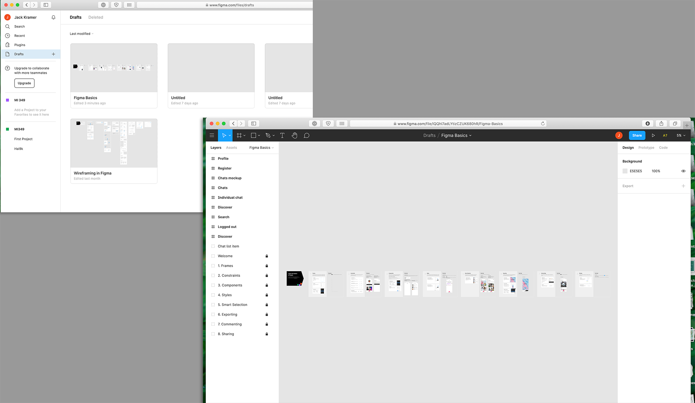
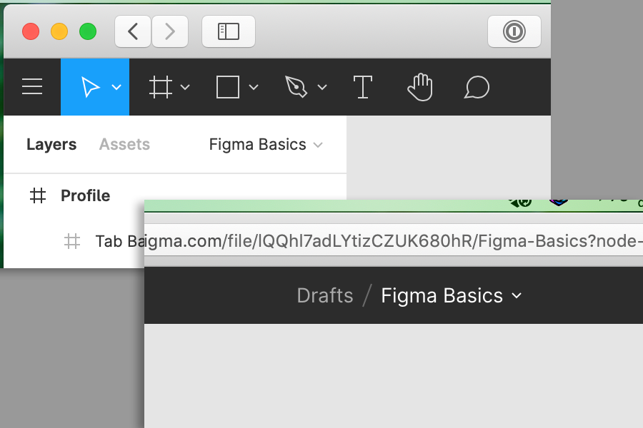
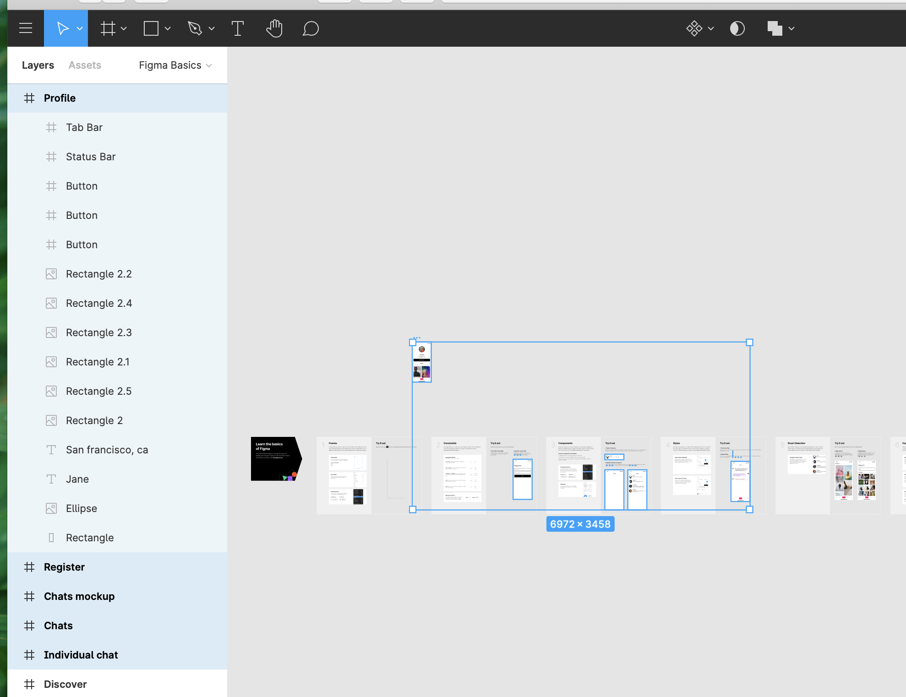
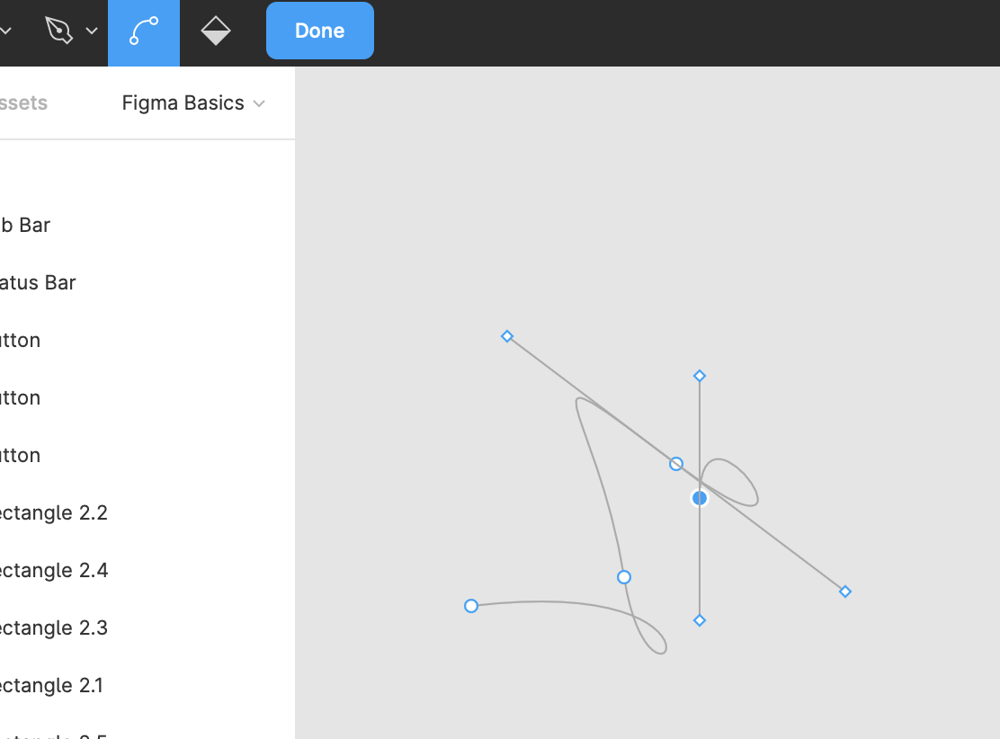
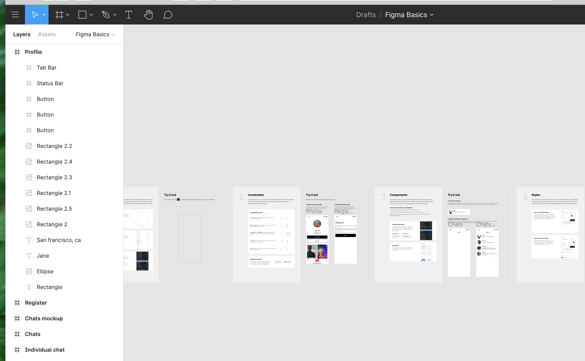
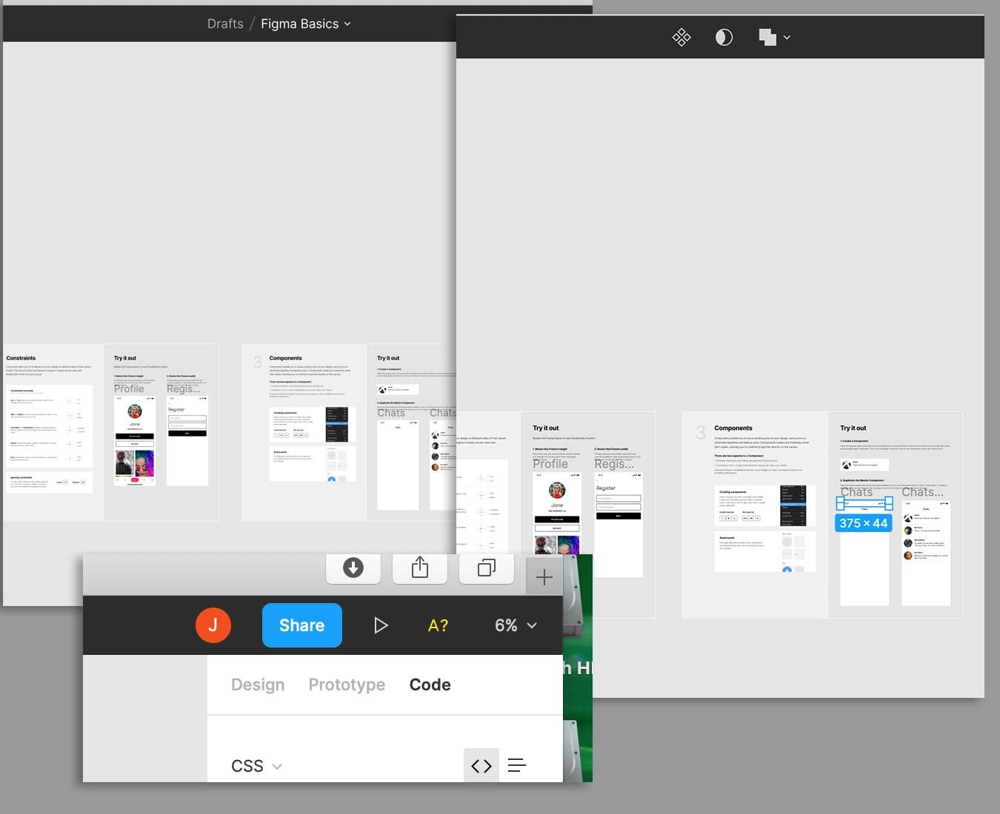
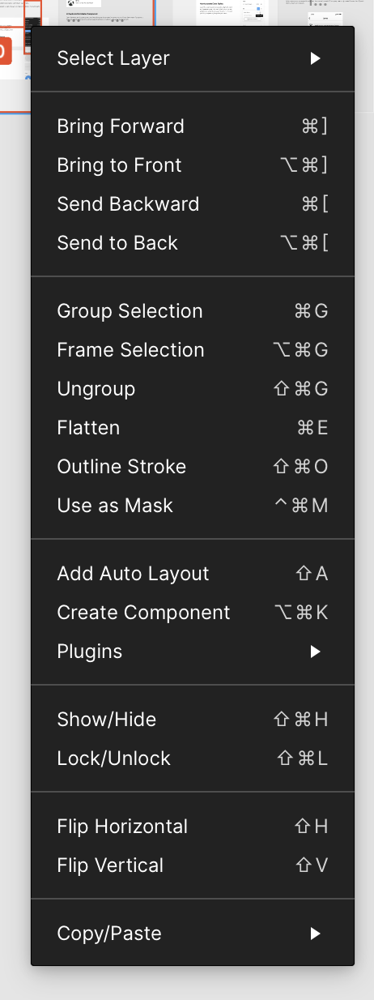
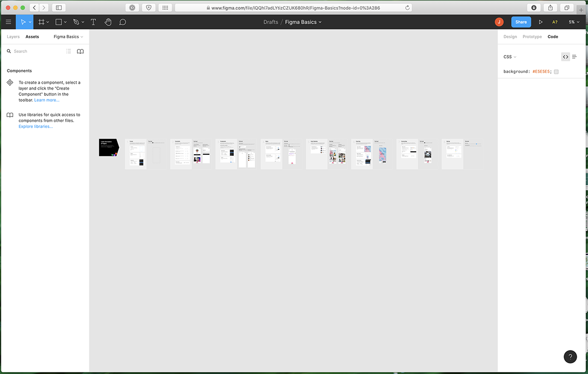
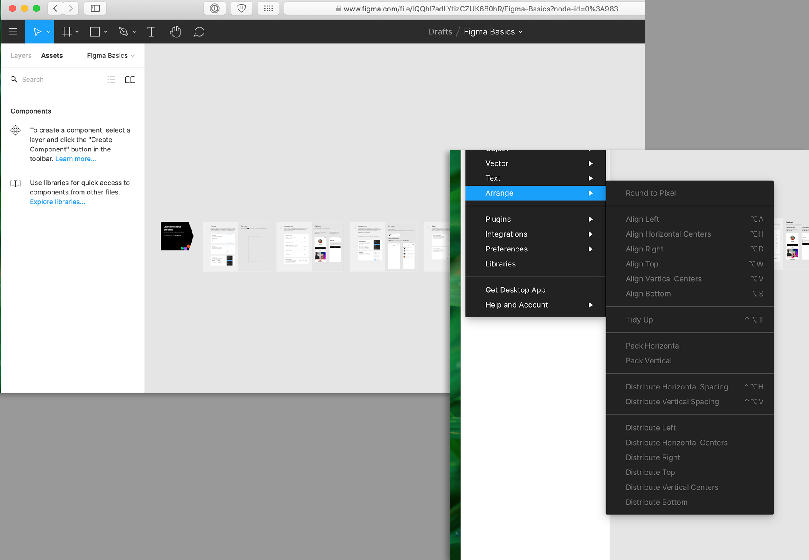
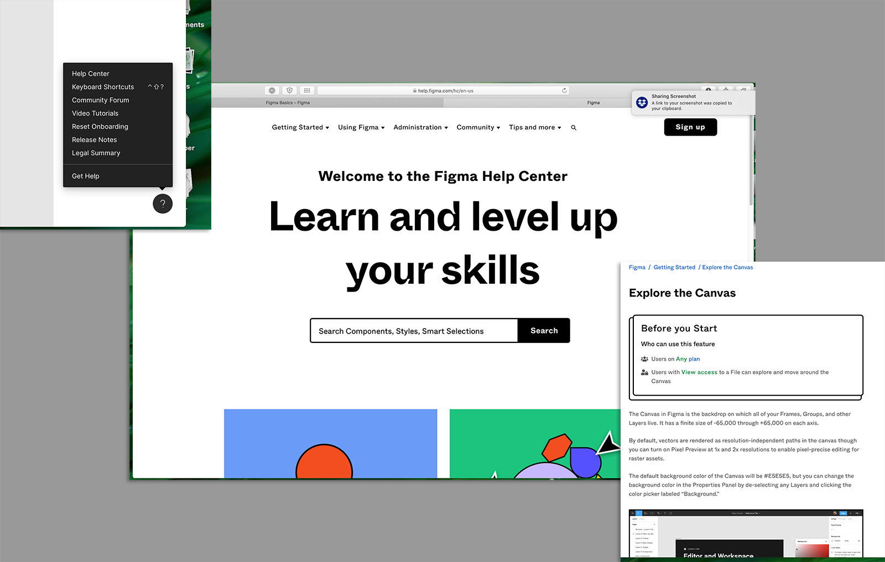

A good user interface is crucial for enabling users to take advantage of an application. If the features of an application are not easily found, or the user interface is too difficult or defective, users will abandon the application in favor of another. With this in mind, we look at Figma and analyze its user interface--both its strengths and its (many) failings.

The system should keep users informed about what's going on, with appropriate feedback, in an appropriate time. Figma's approach to this is acceptable--the system clearly shows when you're in a document versus outside of a document, but it provides no other relevant information as to what the system is doing. There is no information about edit modes, document size, etc.

The system should speak the user's language, using concepts already familiar to the user and the user's experience. Figma requires a user to have at least a medium familiarity with vector drawing applications. The controls are standard vector app tools, but offer little to no explanation for a user new to the overall type of system. The file tree view shows a file tree in the linux/unix "slash" format, with no explanation that this represents a file location aside from a user's expected familiarity with that convention.

Users make mistakes; allow them the power to do so and provide an easy way back. Figma offers great potential for mistakes, but no easily-visible way out. Undo and redo are supported, but only with shortcuts or by visiting a menu--there are no visible undo/redo quick buttons and no visual prompting. Users are expected to guess the capability exists.

Users should not have to wonder if different words, situations, or actions mean different things. Figma does acceptably in this regard. Controls are borrowed from other vector drawing apps and follow the expected conventions for things like curves, line handles, etc., and users who are coming from apps like Illustrator will recognize them.

Applications should be designed to prevent errors by guiding users towards successful use of the program. Figma falls down hardwhen it comes to preventing users from experiencing errors. Selecting elements on the page is difficult and users aren't guided to selectable items (other design programs will highlight selectable areas on a hover action, for instance), nor are they offered clear actions once a selection is made. The program offers undo but it does not prevent the errors from happening in the first place.

Users should not have to memorize functions and interface items--they should be natural and presented in a clear fashion to the user. This is another area where Figma fails to develop a good interface. Controls change in non-obvious ways when items are selected, and the changing controls are not highlighted for the user's awareness. Many functions are hidden away in menus that require users to memorize the menu trees. Functions like undo are hidden in menus or with command keys. Commonly used items like zoom functionality are presented with simple controls but are not obviously the functions they fulfill (zoom is a percentage with no indicator that it represents zoom--other applications use magnifying glass icons).

Accelerators should be present to allow experienced users to take advantage of shortcuts. Figma does well here--there is a large quantity of available command keys for users to take advantage of. They are unfortunately poorly discoverable, but for users who are aware of them they offer speed advantages.

Design should emphasize useful elements and eliminate elements which do not provide value. Too much information effectively hides the important elements of a display. Figma effectively overdoes the minimalism--the application is visually simple but does not do enough to explain functions and provide information, which causes users to become frustrated when having to crawl through the interface to figure out what they want to do.

Error messages should be in plain language and offer clear paths to resolution. Figma blocks controls when they are not usable, but does not explain why the controls are blocked. Other actions produce error messages but may require users to jump into the documentation to correct.

Not all systems are usable without documentation, so documentation provided should be thorough and accessible. Figma offers a documentation center which is easily accessible through the help icon on the screen, but it suffers from some usability issues. Documentation is highlighted by a search function--this is good for users who know specifically what they want help with, but not for new users. Users will hopefully notice the "getting started" link at the top but it could stand to be clearer. Once in documentation, the steps are reasonably clear but suffer from extraneous information and are overly detailed.